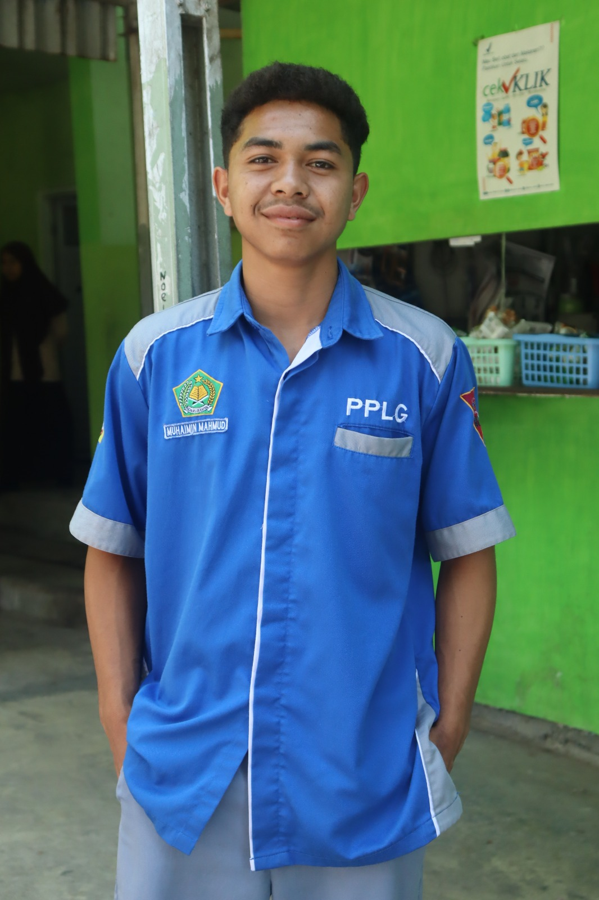
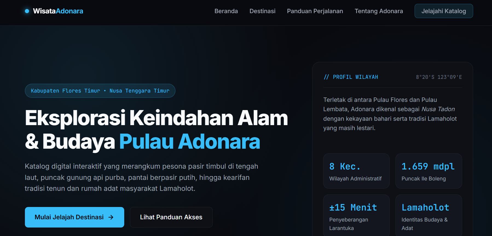

Portal Informasi MAKN Ende
Situs profil jurusan dan informasi kegiatan siswa berbasis web responsif.

Siswa kelas 12 jurusan Pengembangan Perangkat Lunak dan Gim (PPLG) di MAKN Ende. Berfokus pada pengembangan antarmuka web modern dan perancangan sistem berbasis kode yang efisien.
Saya adalah pelajar kejuruan di Madrasah Aliyah Kejuruan Negeri (MAKN) Ende yang memiliki ketertarikan mendalam pada dunia rekayasa perangkat lunak, desain antarmuka (UI), dan pengembangan web.
Bagi saya, menulis kode bukan sekadar membuat tampilan menarik, tetapi juga memastikan struktur sistem mudah digunakan, ringan diakses, dan mampu menyelesaikan masalah nyata di lingkungan sekitar.
Situs profil jurusan dan informasi kegiatan siswa berbasis web responsif.

Aplikasi pencatatan peminjaman alat praktik dan perangkat laboratorium sekolah.

Katalog digital interaktif destinasi wisata dan sejarah di Pulau Adonara, Flores Timur, NTT.

Gim interaktif berbasis web untuk melatih logika dasar algoritma dan pemrograman.
Madrasah Aliyah Kejuruan Negeri Ende. Mendalami Pengembangan Perangkat Lunak dan Gim, meliputi pemrograman web (HTML, CSS, JS, PHP), basis data (MySQL), serta logika pemrograman.
Menyelesaikan pendidikan menengah pertama dengan ketertarikan awal pada bidang pendidikan agama Islam, dan kegiatan organisasi siswa.
Menempuh pendidikan dasar dan membangun fondasi akademik serta kedisiplinan belajar.
Pendidikan anak usia dini sebagai langkah awal mengenal lingkungan belajar dan kreativitas.
Dicoding Indonesia • 2025
Pelatihan Kejuruan PPLG • 2024
Tertarik berdiskusi mengenai proyek web, kolaborasi belajar, atau peluang magang/PKL? Kirim pesan langsung melalui formulir atau salin alamat email di bawah ini.